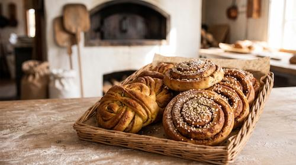

Kardemummasnurra
32 kr
Vår populäraste bulle snurrad med rikligt av grovmalen kardemumma och smörfyllning.
Innehåll: Vetemjöl, smör, mjölk, socker, kardemumma, jäst.
Allt vårt bröd och fikabröd bakas för hand på stenmalet ekologiskt mjöl.
Bakat på äkta smör, nystött kardemumma och fyllningar kokade i vårt eget kök.

32 kr
Vår populäraste bulle snurrad med rikligt av grovmalen kardemumma och smörfyllning.
Innehåll: Vetemjöl, smör, mjölk, socker, kardemumma, jäst.
32 kr
Klassisk kanelbulle bakad med en klick söt surdeg för djupare smak och extra saftighet.
Innehåll: Vetemjöl, smör, mjölk, socker, ceylonkanel, pärlsocker, jäst, surdegskultur.
45 kr (påse)
Spröda traditionella småkakor förpackade i papperspåsar om 8 stycken.
Innehåll: Vetemjöl, smör, sirap, socker, vanilj.